Dashboard operacional
Cards de chamados totais, abertos, em atendimento e resolvidos; gráficos por status e prioridade; TMR, TMA, cumprimento de SLA, chamados recentes, atividade recente e notificações com atualização automática a cada 30 segundos.
Gestão de TI inteligente, segura e escalável. Centralize chamados, acompanhe ativos, monitore serviços e tenha mais visibilidade da operação em uma única plataforma web.
Ilustração conceitual da organização das informações — não representa dados reais de clientes.
Quando as solicitações ficam espalhadas em mensagens, e-mails e planilhas, acompanhar prioridades, responsabilidades e prazos se torna muito mais difícil.
O HelpDesk IT Cloud Solutions reúne recursos para organizar o atendimento, acompanhar indicadores e monitorar ativos e serviços. A proposta é dar à equipe mais contexto para priorizar o trabalho e à gestão mais clareza sobre a operação.
Do registro do chamado à auditoria, o HelpDesk reúne ferramentas para organizar o atendimento, acompanhar níveis de serviço e dar mais visibilidade à infraestrutura.
Cards de chamados totais, abertos, em atendimento e resolvidos; gráficos por status e prioridade; TMR, TMA, cumprimento de SLA, chamados recentes, atividade recente e notificações com atualização automática a cada 30 segundos.
Visualize Novos Chamados, Em Andamento, Pendentes e Resolvidos. Crie chamados com título, descrição, prioridade e contrato; atualize status, atribua técnicos conforme o perfil e registre a solução. Respostas prontas agilizam o preenchimento.
Crie, edite e exclua artigos da base de conhecimento e respostas prontas. Centralize tutoriais e procedimentos e padronize mensagens usadas frequentemente pela equipe.
Cadastre hardware, software e servidores; registre endereço IP, número de patrimônio e status para manter os ativos organizados e facilitar a consulta técnica.
Defina regras de tempo de resposta e resolução conforme a prioridade. Exemplo configurável: prioridade crítica com resposta em 1 hora e resolução em 4 horas.
Crie, edite, exclua usuários e redefina senhas. Vincule perfis e grupos; configure permissões granulares para controlar menus e telas acessíveis por cada função.
Configure provedores SMTP como iCloud, Gmail, Outlook ou Brevo. O sistema identifica a configuração de segurança adequada para as portas 465/587; teste a conexão e envie um e-mail real de teste antes de salvar. Notificações podem ser disparadas na abertura, atualização e resolução dos chamados.
Filtre chamados por data, período e status; consulte datas de abertura e resolução e tempo de resolução. Selecione colunas e exporte os dados em CSV para análise em planilhas.
Consulte registros de criação, edição e exclusão, com filtros por data, tipo de ação e usuário para apoiar a rastreabilidade administrativa.
Cadastre alvos Ping, HTTP e TCP e execute verificações manuais ou automáticas a cada minuto. Quando uma condição de indisponibilidade é detectada, o sistema pode abrir um chamado automaticamente.
Com a instalação do agente no servidor monitorado, acompanhe métricas de CPU, memória RAM e disco e visualize os indicadores no dashboard.
Cadastre contratos, vincule chamados e organize limites de atendimento. O licenciamento utiliza validação criptográfica RSA, prazo de validade e ativação pela tela de Setup; o arquivo de licença permanece no servidor conforme a implantação.
Uma prévia das telas do sistema: dashboard, chamados, inventário, monitoramento, relatórios e configurações. Use as setas ou navegue pela faixa de imagens.
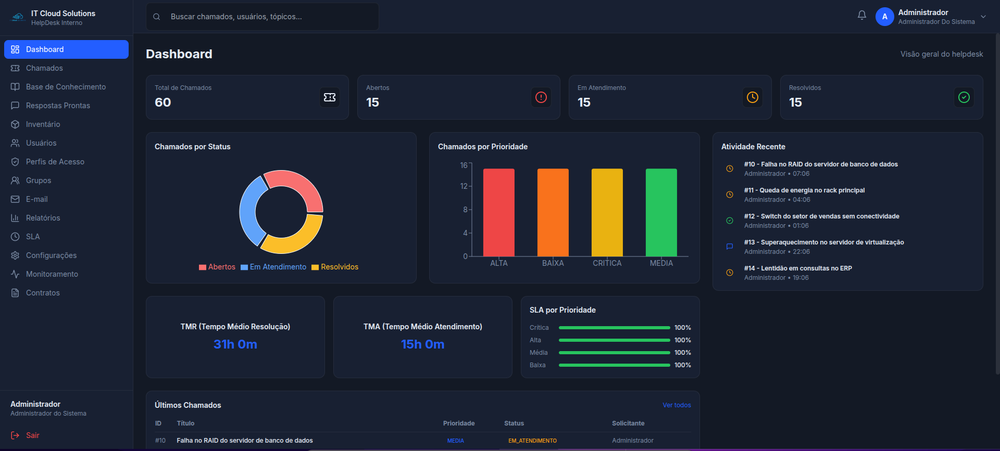
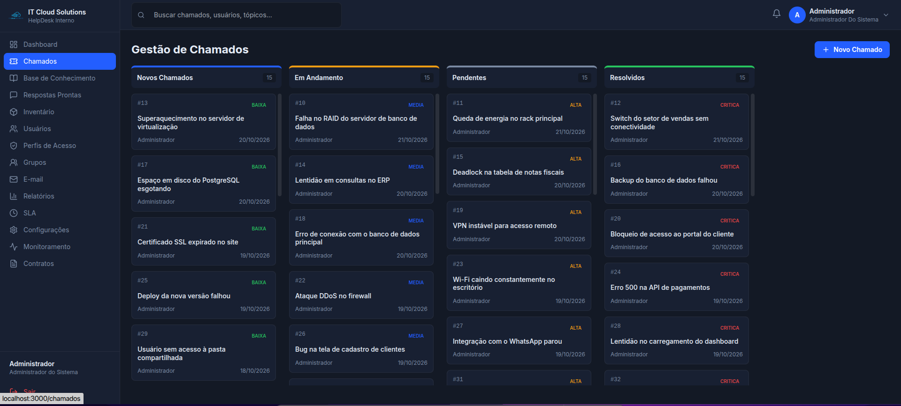
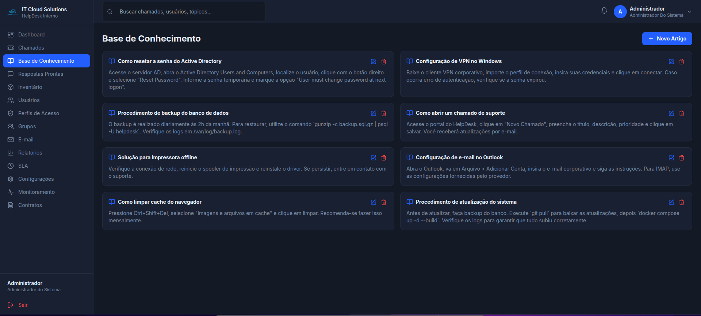
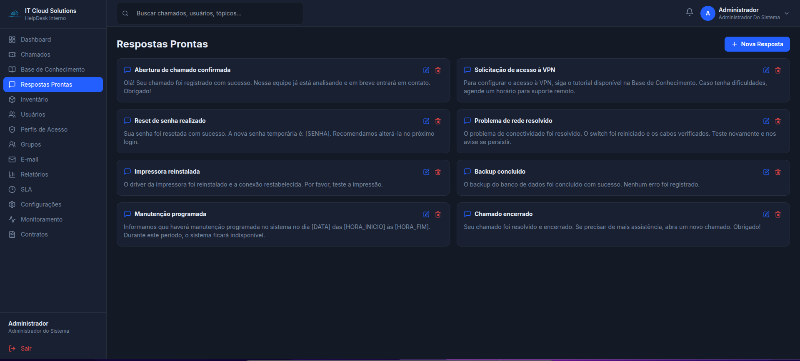
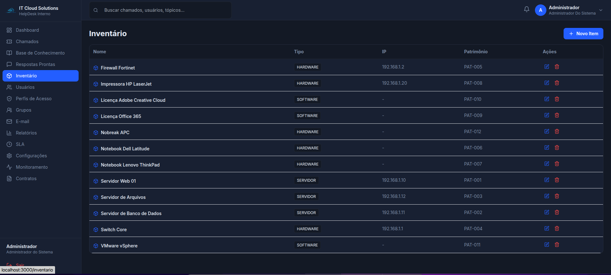
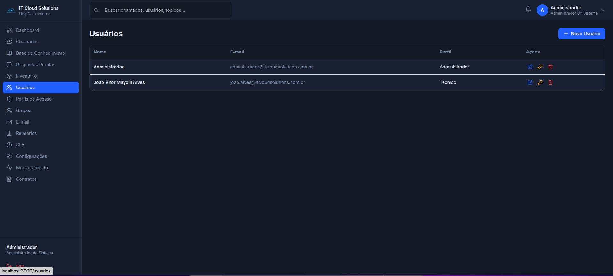
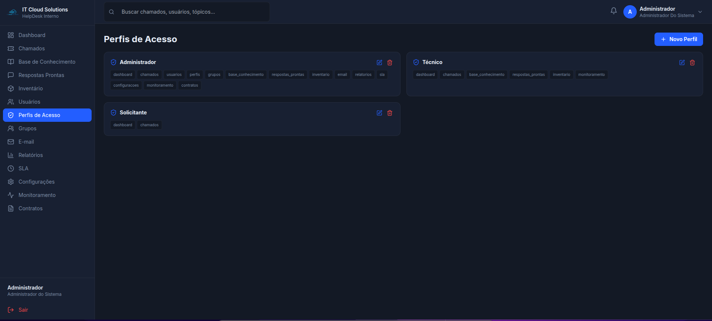
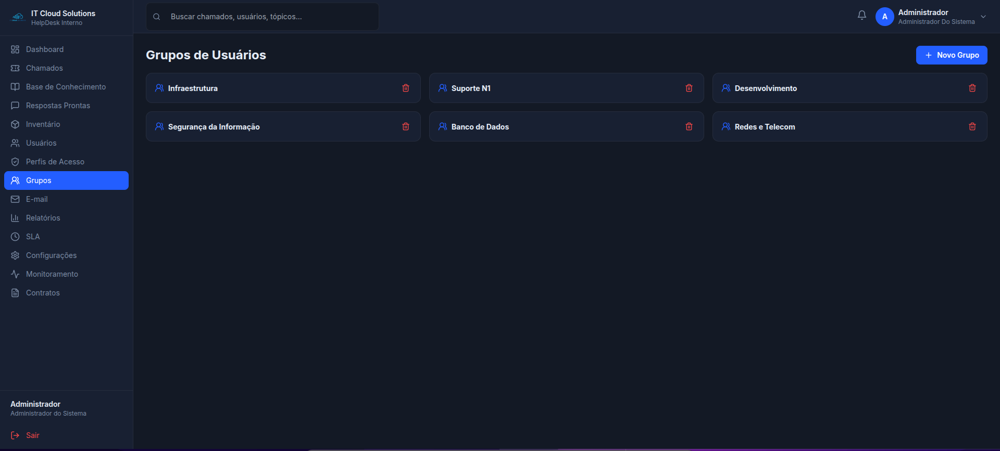
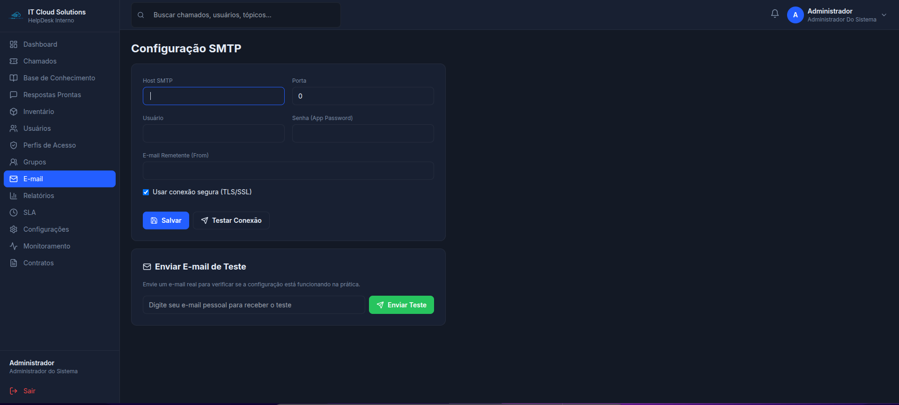
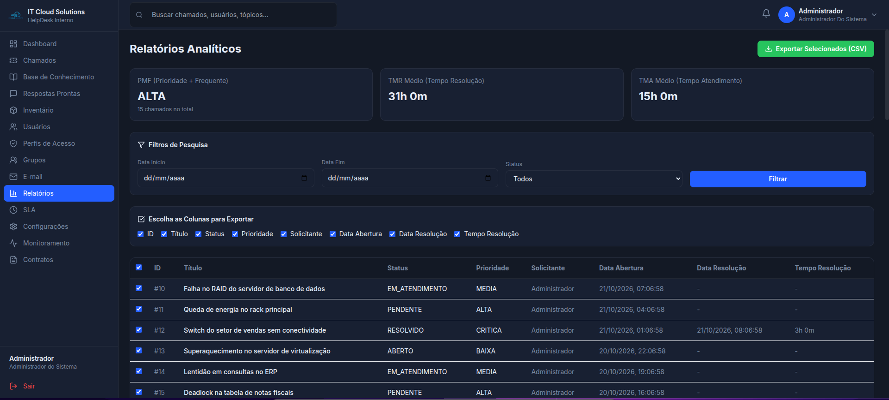
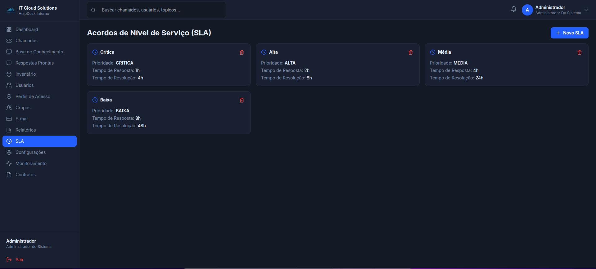
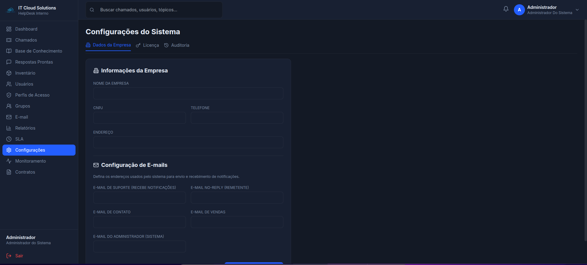
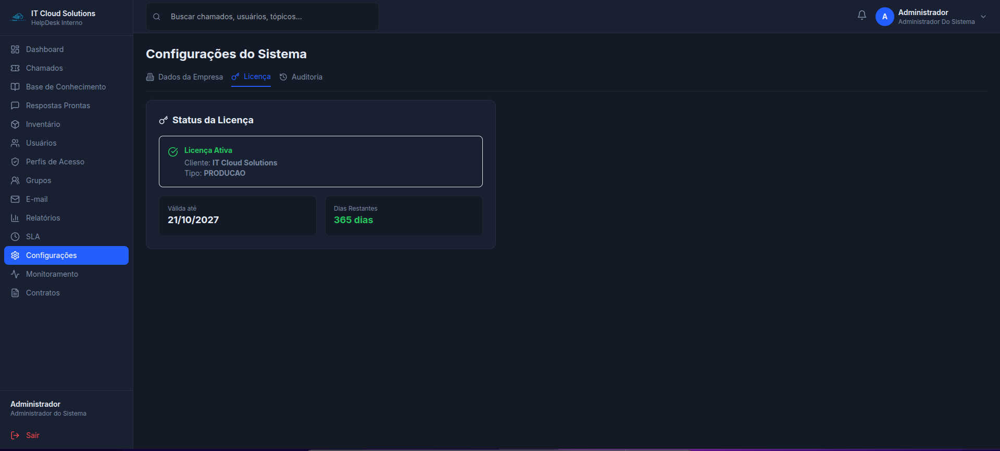
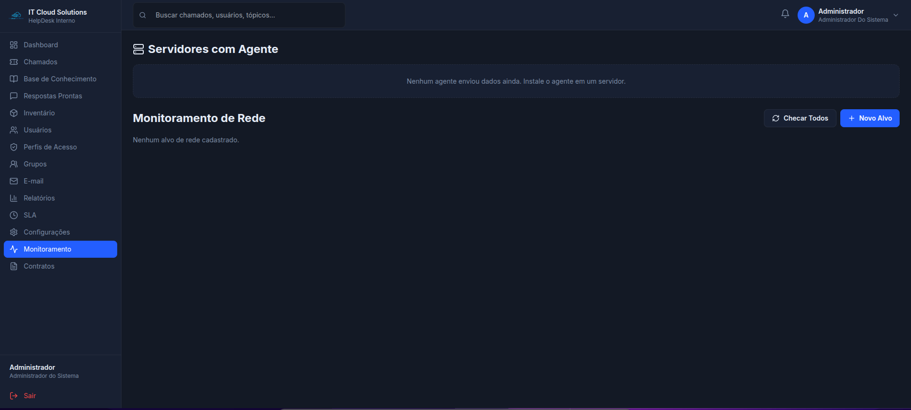
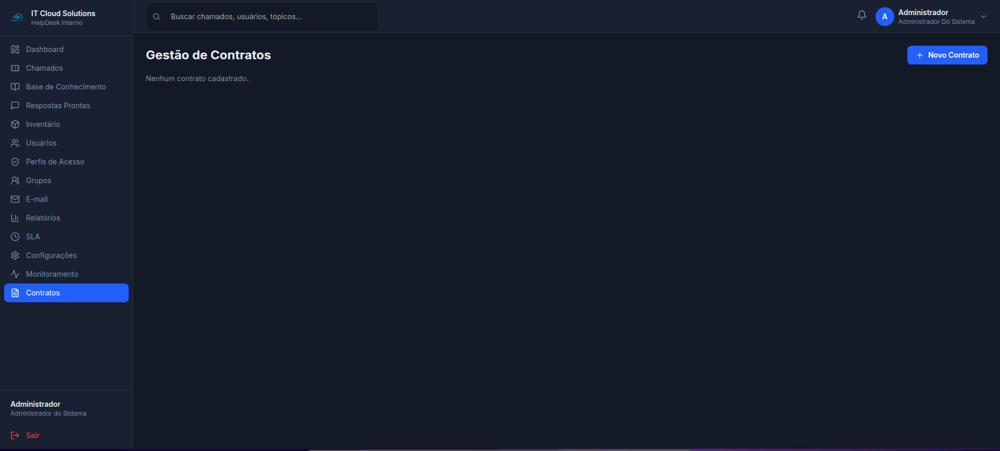
Uma experiência web com recursos de configuração, monitoramento e personalização para apoiar diferentes operações de suporte de TI.
Converse com a IT Cloud SolutionsA arquitetura informada para o produto combina tecnologias amplamente utilizadas no desenvolvimento web e na implantação de aplicações.
O projeto contempla mecanismos de autenticação, licenciamento e controle de acesso. A segurança efetiva também depende da implantação, das configurações e das rotinas operacionais adotadas.
Containers, consultas ao banco e monitoramento de recursos ajudam a organizar a implantação e a operação. A capacidade e a disponibilidade finais dependem do dimensionamento e da configuração da infraestrutura.
Docker e Docker Compose apoiam a padronização do ambiente e facilitam a manutenção da implantação.
O monitoramento de CPU, memória e disco ajuda a identificar sinais de uso elevado e orientar a análise da infraestrutura.
Estas ideias fazem parte das possibilidades futuras de evolução e não devem ser entendidas como funcionalidades já disponíveis.
Análise de padrões e detecção de possíveis anomalias no comportamento da infraestrutura.
Triagem e abertura de chamados por canais como WhatsApp ou Telegram.
Apoio aos técnicos que precisam consultar e atender chamados em campo.
Conexões com plataformas existentes e dashboards preditivos para apoiar a prevenção de falhas.
Converse com a IT Cloud Solutions para avaliar a infraestrutura, o escopo e o formato de contratação mais adequado à sua empresa.
Hospedagem na AWS, rotina de backup e suporte conforme as condições do plano contratado. Modelo com mensalidade, pensado para empresas que preferem não administrar diretamente a infraestrutura da aplicação.
Solicitar propostaImplantação no ambiente da própria empresa, com servidor fornecido pelo cliente e possibilidade de suporte mensal conforme o escopo acordado.
Solicitar propostaValores, limites, requisitos de infraestrutura, backup, suporte e condições de licenciamento são definidos na proposta comercial.
Fale com a IT Cloud Solutions para conhecer o HelpDesk, esclarecer dúvidas e avaliar como os recursos se encaixam na rotina da sua empresa.
Condições comerciais e escopo a confirmar no contato.